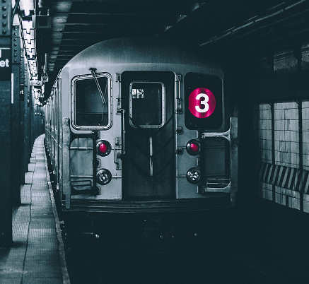

Planned Service Changes

DAILY
12AM MON to 12PM MON
Queens-bound, Bronx-bound, Manhattan-bound, and Brooklyn-bound trains will stop at this station
Travel Alternatives:
There is none better.
Just go along for the ride.
Train Name Game
Objective - Determine which were once names of NYC's trains!
Instructions - Tap on the ones you think were NEVER a NYC subway service train line.
If you're on track, those that never were will disappear!
Any of this spark your curiosity?
Want to learn more?
Check out the history page!